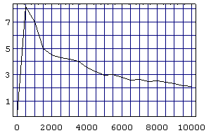
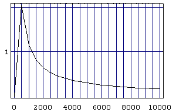
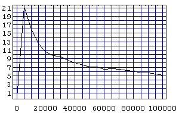

For evident reasons, to calculate
Here is the formulation as a Mathematica function:
Euclid[ c_Integer, m_Integer, t_Integer ] := pXES[ Range[ c + m, t, m ] ] /; IsCoprime[ c, m ] && 0 < c < m && IsNaturalZ[ t ]
It gives the terms of
Note that Euclid and other functions use
Example
{3, 5, 7, 11, 13, 17, 19, 23, 29, 31, 37, 41, 43, 47, 53, 59, 61, 67, 71, 73, 79, 83, 89, 97}
{4, 7, 13, 19, 25, 31, 37, 43, 61, 67, 73, 79, 97}
{5, 8, 11, 17, 23, 29, 41, 47, 53, 59, 71, 83, 89}
{19, 29, 39, 49, 59, 79, 89}
As you can see in the example above, the terms of the Euclid(c, m) set are prime numbers only for
CompositeTerms[ set_List ] := Cases[ set, x_ /; Not[ PrimeQ[ x ] ] ] /; IsNaturalZ[ set ]
It gives the subset of the composite numbers in the set.
CompositeRatio[ {} ] := 0.0
CompositeRatio[ set_List ] := N[ 100 Length[ CompositeTerms[ set ] ] / Length[ set ] ]
It gives the percentual of composite numbers in the set.
PlotCompositeRatio[ c_Integer, m_Integer, start_Integer, stop_Integer, step_Integer ] :=
ListPlot[ Table[ {k, CompositeRatio[ Euclid[ c, m, k ] ]}, {k, start, stop, step} ],
PlotJoined -> True,
PlotRange -> All,
Axes -> False,
Frame -> True,
FrameTicks -> {Automatic, Range[ 1, 100, 2 ]},
GridLines -> {Range[ start, stop, step ], Range[ 1, 100, 1 ]}
]
It plots CompositeRatio[ Euclid[ c, m, k ] ] with k ranging from start to stop, by step.
Example
0
8.16327
2.04082
2.94118
0.295858


{18, 35, 103, 137, 239, 307, 341, 409, 443, 613, 647, 817, 851, 919, 953}
33.3333
{18, 35, 103, 137, 239, 307, 341, 409, 443, 613, 647, 817, 851, 919, 953, 1021, 1123, 1157, 1259, 1327, 1361, 1429, 1531, 1667, 1769, 1871, 1973, 2143, 2347, 2381, 2551, 2687, 2789, 2857, 2993, 3061, 3163, 3299, 3469, 3571, 3673, 3877, 3911, 4013, 4217, 4421, 4489, 4523, 4591, 4897, 4931, 4999, 5101, 5237, 5407, 5441, 5849, 6053, 6121, 6257, 6359, 6427, 6529, 6563, 6733, 6869, 6971, 7039, 7243, 7379, 7481, 7549, 7583, 7753, 8059, 8093, 8161, 8263, 8297, 8467, 8501, 8807, 9011, 9181, 9283, 9419, 9487, 9521, 9623, 9929}
13.3333
7.82918
13.0435
13.0435
7.19178
6.66667
